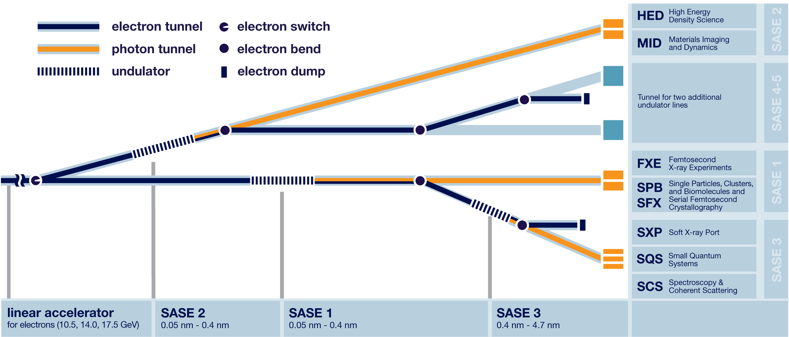

Virtual X-Ray Pulse Characterisation at the European XFEL
Round Table on Deep Learning, 25.11.2022
Christian Grech, MXL (DESY)

Outline
- Virtual Diagnostics for the EuXFEL
- Energy Calibration of Bragg crystal setups
- X-Ray Pulse Property Prediction
- Future Prospects
Outline
- Virtual Diagnostics for the EuXFEL
- Energy Calibration of Bragg crystal setups
- X-Ray Pulse Property Prediction
- Future Prospects
Virtual Diagnostics for the EuXFEL

- Simulations
- Surrogate models
Outline
- Virtual Diagnostics for the EuXFEL
- Energy Calibration of Bragg crystal setups
- X-Ray Pulse Property Prediction
- Future Prospects
Energy Calibration of Bragg crystal setups
C. Grech, G. Geloni, M. Guetg

- A measurement model was created using data from historical scans.
- Lines are detected from spectrometer scans.
- Reflections can be identified using a classifier and the actual photon energy determined.
Machine Learning Applied for the Calibration of the Hard X-Ray Single-Shot Spectrometer at the European XFEL, in Proc. IPAC'22, Bangkok, Thailand, Jun. 2022, TUPOST046.
Outline
- Virtual Diagnostics for the EuXFEL
- Energy Calibration of Bragg crystal setups
- X-Ray Pulse Property Prediction
- Future Prospects
X-Ray Pulse Property Prediction
C. Grech, F. Jafarinia, G. Geloni, M. Guetg, T. Guest

- Electron beam trajectory is used to predict photon properties as measured at the experimental halls.
- Measurements at the SASE1 beamline have taken place in collaboration with SPB/SFX and data is being analysed.
Outline
- Virtual Diagnostics for the EuXFEL
- Energy Calibration of Bragg crystal setups
- X-Ray Pulse Property Prediction
- Future Prospects
Future Prospects
- Moving from a proof-of-concept towards regular deployment.
- Addressing challenges such as machine drifts, retraining models.
- Ease-of-access needs to improve to allow widespread use.
Thanks for your attention!